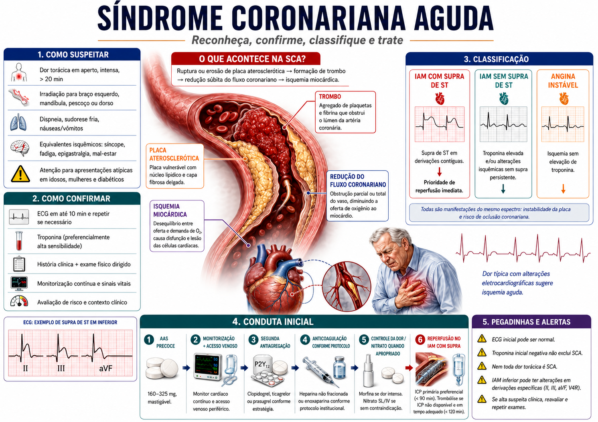

bônus do plano completo
E você pode levar uma camada extra de revisão estratégica
Os bônus ficam separados do PDF principal para não poluir os 120 mapas e para você acessar cada recurso quando realmente precisar.

30 Mapas de Emergência
Uma biblioteca extra voltada a situações agudas, condutas críticas e revisão rápida de cenários em que a sequência de decisão faz diferença.
Incluído no Plano Completo
30 Mapas “Não Confunda”
Comparações lado a lado para temas semelhantes, diagnósticos diferenciais e pegadinhas que costumam gerar troca de conceitos.
Incluído no Plano Completo
Checklist da Reta Final
Um roteiro simples para conferir o que já foi revisado, identificar lacunas e organizar as últimas passagens pelo conteúdo.
Incluído no Plano Completo